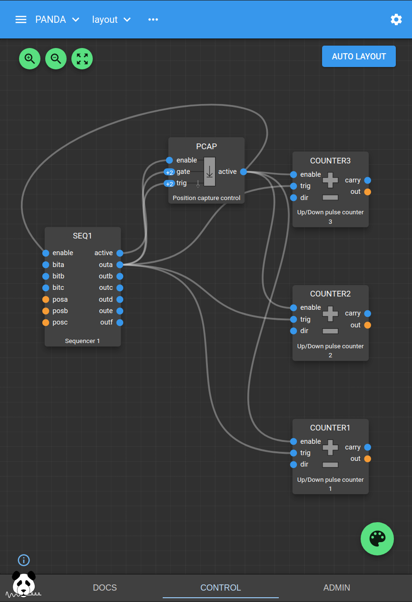

Commandline Load/Save Tutorial¶
This tutorial shows how to use the commandline tool to save the state of all the Blocks and Fields in a PandA, and load a new state from file. It assumes that you know the basic concepts of a PandA as outlined in the PandABlocks-FPGA blinking LEDs tutorial.
Save¶
You can save the current state using the save command as follows:
$ pandablocks save <hostname> <save_file>
The save file is a text file containing the sequence of pandablocks control commands that will set up the PandA to match its state at the time of the save. This is a human readable file and may be edited if you want to modify a few fields.
e.g. the first few lines of the tutorial save file look like this:
OUTENC1.DATA.DELAY=0
OUTENC2.DATA.DELAY=0
OUTENC3.DATA.DELAY=0
OUTENC4.DATA.DELAY=0
OUTENC1.A.DELAY=0
OUTENC2.A.DELAY=0
OUTENC3.A.DELAY=0
OUTENC4.A.DELAY=0
OUTENC1.QPERIOD.UNITS=s
OUTENC2.QPERIOD.UNITS=s
OUTENC3.QPERIOD.UNITS=s
OUTENC4.QPERIOD.UNITS=s
Load¶
To restore a PandA to a previously saved state use the load command as follows:
$ pandablocks load <hostname> <save_file>
This is equivalent to typing the sequence of commands in <save_file> into the pandablocks control command line.
To load the preconfigured tutorial state:
$ pandablocks load <hostname> --tutorial
The tutorial sets up a Seqencer block driving 3 Counter blocks and a Position Capture block. This configuration is the starting point for the next tutorial: Commandline Capture of HDF Files Tutorial
The tutorial blocks are wired up as shown in the following Web UI layout.
